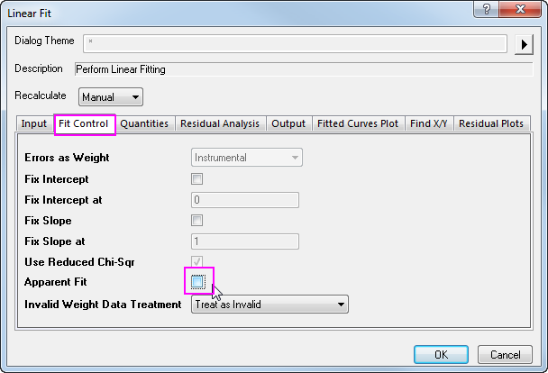
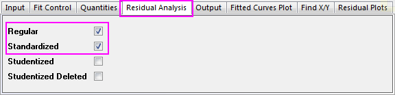
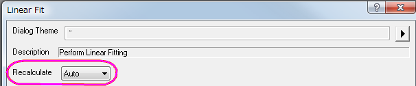
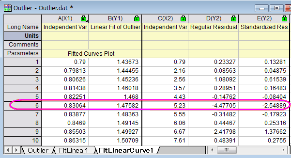
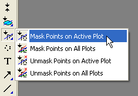
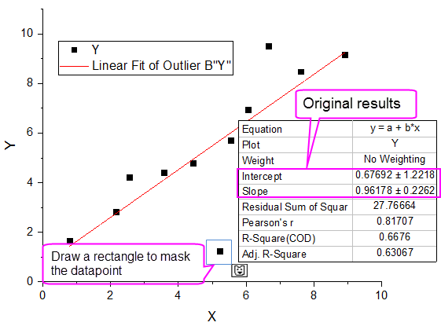
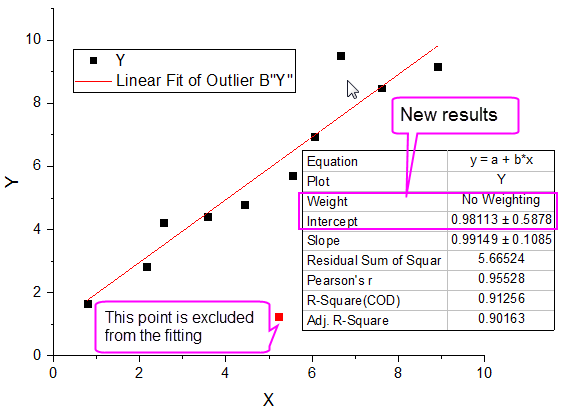

Lineares Anpassen und Entfernen von Ausreißern
Linear-Fitting
Zusammenfassung
Ein Ausreißer wird üblicherweise als ein Datenpunkt oder eine Beobachtung in einer Sammlung beschrieben, der bzw. die "sehr unterschiedlich" von den anderen Punkten ist, und daher z. B. auf Fehler im Messverfahren zurückgeführt werden können. Die Identifizierung und das Entfernen von Ausreißern ist oft umstritten. Es ist normalerweise "akzeptierbarer" in Situationen, in denen das Modell die Daten gewöhnlich als bekannt und akzeptiert beschreibt.
Was Sie lernen werden
Dieses Tutorial zeigt Ihnen, wie Sie:
- eine lineare Regression an einem Satz von Datenpunkten durchführen,
- die Residuen-Tabelle in der Ausgabe untersuchen und Ausreißer ermitteln,
- mit dem Maskierungshilfsmittel Ausreißerpunkte entfernen,
- die Neuberechnung verwenden, um automatisch das Ergebnis nach dem Entfernen der Ausreißer zu aktualisieren.
Das Verfahren, das in diesem Tutorial beschrieben wird, ist gleichermaßen anwendbar auf andere Anpassungshilfsmittel wie polynomiale und nichtlineare Anpassungen.
Schritte
- Öffnen Sie eine neue Arbeitsmappe und importieren Sie die Datei \Samples\Curve Fitting\Outlier.dat
- Klicken Sie auf und markieren Sie die zweite Spalte und wählen Sie den Menüpunkt Zeichnen: Symbol: Punktdiagramm, um ein Punktdiagramm zu erstellen.
- Gehen Sie bei aktiven Diagramm zum Menüpunkt Analyse: Anpassen: Linearer Fit, um den Dialog Lineare Anpassung aufzurufen. Bitte beachten Sie, dass, wenn Sie den Dialog Lineare Anpassung vorher verwendet haben, ein Ausklappmenü erscheint und Sie Dialog öffnen wählen müssen.
- Deaktivieren Sie auf der Registerkarte Fit-Optionen das Kontrollkästchen Scheinbarer Fit.

- Aktivieren Sie auf der Registerkarte Residuenanalyse im Dialog das Kontrollkästchen Standardisiert.

- Ändern Sie die Auswahlliste Neu berechnen im oberen Bereich des Dialogs mit Auto und und drücken Sie im unteren Bereich auf OK. Der Dialog wird geschlossen, und es wird eine lineare Regression für diese Daten durchgeführt.

- Wählen Sie das Ergebnisblatt FitLinearCurve1 in der Datenarbeitsmappe und scrollen Sie zur rechten Seite, um die Spalte Standardisiertes Residuum zu sehen. Sie werden feststellen, dass der Wert in Zeile 6 dieser Spalte
-2,54889 ist:

- Aktivieren Sie das Diagramm und klicken Sie mit der linken Maustaste, die Sie dabei gedrückt halten, auf "Regionales Maskierungshilfsmittel" in der Symbolleiste Hilfsmittel. Wählen Sie das Untermenü "Maskierung zu aktiver Zeichnung hinzufügen", das als erster Punkt im Ausklappmenü angezeigt wird.

- Gehen Sie bei dem oben ausgewähltem Untermenü zum Diagramm und markieren Sie den 6. Datenpunkt, um den Punkt zu maskieren. (Beachten Sie, dass Sie ein Rechteck um den Punkt aufziehen können.)

Die Maskierung dieses Punktes wird die Eingabedaten der linearen Anpassung verändern und einen automatischen Aktualisierungsmechanismus auslösen. Die lineare Anpassung wird ohne diesen spezifischen maskierten Punkt wiederholt. Die Anpassungskurve im Diagramm und die Parametertabelle werden automatisch aktualisiert. Das Diagramm sollte am Ende folgendermaßen aussehen:
